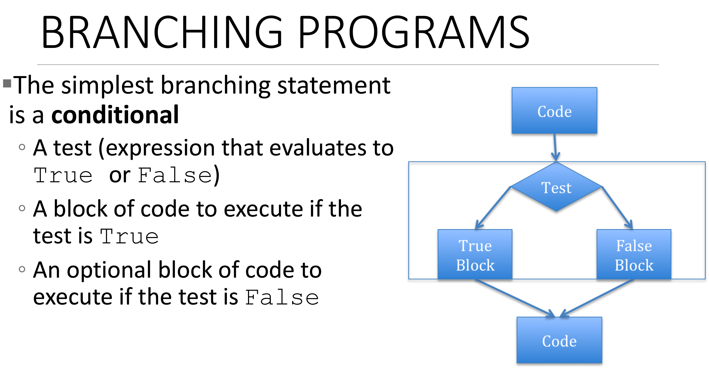

Learning Teams
 MITx: 6.00.1x
MITx: 6.00.1x
 Lecture 1
Lecture 1
Lecture 1
Course Notes
These notes follow the course material directly.
Declarative Knowledge is a statement of fact, statement of truth.
Square root of number x is y such that y*y = x
Imperative Knowledge is a recipe a how-to, computation.
- Sequence of steps
- Flow of control that specifies when each step is executed
- Means of determining when to stop
An algorithm is a conceptual idea (math concept) and a program is concrete application of an algorithm.
Fixed Program Computer, example a calculator
Stored Program Computer, machine stores and executes instructions, what we use
Inside the computer is an interpreter, understands instructions and does computations.
Basic Machine Architecture
ALU unit does is it takes information from memory, reads it in-- often two pieces of information if I'm going to do an operation that takes two inputs-- is going to do a primitive operation could be addition, could be subtraction, could be testing to see if something is true or false, and then typically is going to store stuff back up into memory.
Control Unit / Program Counter points to the first instruction for the ALU to do operations on.
Abstract create new primitives, using the primitives provided by the language
Aspects of Language
Programming languages offer a set of primitive operations
Expressions are complex, legal combinations of primitives in a programming language
Expressions and computations have values and meanings in a programming language?
Primitive Constructs
English: words
Programming Language: numbers, strings, simple operators (addition, subtraction, comparison)
Syntax is this a legal string or sentence
Static Semantic is a syntactically valid string that can be computed. Things are in the right order with the right types and operations. It can have meaning.
3*5 → syntactically valid
3+"hi" → static semantic error, legally valid but cannot be computed, no meaning
Semantics is the actual meaning with a syntactically legal string of symbols with no static semantic errors.
Challenges with Language
Where things often go wrong
Syntactic error illegal combination or typo in string
Static semantic error things in the right order, but don't make sense
Semantic error most challenging, the program doesn't do what expected.
Programming and Types
A python program sequence of definitions and commands.
Definitions evaluated, definitions are assigning names to values.
Commands executed by Python interpreter
Commands / Statements instruct the interpreter to do something
Programs manipulate data objects
Objects have types
Scalar objects cannot be subdivided
Non-scalar objects have internal structure that can be accessed
Some scalar objects examples in Python
int - integar
float - number with decimal
bool - True or False
NoneType - special None value
Casting convert a type into something else
>>> int(3.9)
3
# Valid expression syntax
# ‹object›‹operator›‹object›
>>> 3 + 2
5
>>> 3.0 + 2
5.0Variables and Operators
Assignment
Equal sign is an assignment of a value to a variable name. Stores the value in computer memory for the program to access. This will be especially useful and key to programming after other concepts are more developed.
>>> pi = 3.14159
>>> pi
3.14159
>>> pi_approx = 22/7
>>> pi_approx
3.142857142857143It's useful to give informative names to code, so you can remember what the variable is used for and others can understand your semantic intention. Reusing variables is permitted as well, but reusing will become clearer later on when to reuse and when to create new variables.
>>> pi = 3.14159; radius = 2.2; area = pi*(radius**2)
>>> area
15.205295600000001
>>> area + 1
16.2052956
>>> area # note the value of area is not changed
15.205295600000001
>>> area += 1 # after reassignment it changes, same as area = area + 1
>>> area
16.2052956Comparison Operators
Below are operators you will be using to compare to values. The first line shows the legal syntax for comparing two values with a comparison operator.
‹value› ‹operator› ‹value›
‹value› > ‹value›
‹value› >= ‹value›
‹value› < ‹value›
‹value› <= ‹value›
‹value› == ‹value›
‹value› != ‹value›
‹value› and ‹value›
‹value› or ‹value›Boolean: True or False
not a → is the opposite value.
If 'a is True' than the 'not a' evaluates to 'False'. If 'a is False' than 'not a' evalutes to 'True'
a and b → is 'True' if both 'a' and 'b' are 'True'.
Is 'False' if at least 1 of the values is 'False'.
a or b → 'True' if at least one value is 'True' or both are 'True'.Branching Program
Conditional using True or False to tell the computer what to do.
It let us do different things, apply logic.
The indentation is required per each conditional statement

# Conditional Example
x = int(input('Enter an integer: '))
if x%2 == 0:
print('')
print('Even')
else:
print('')
print('Odd')
print('Done with conditional')
# Nested Conditional
If x%2 == 0:
If x%3 == 0:
print('Divisible by 2 and 3')
else:
print('Divisible by 2 and not by 3')
elif x%3 == 0:
print('Divisible by 3 and not by 2')
# Compound Boolean
if x < y and x < z:
print('x is least')
elif y< z:
print('y is least')
else:
print('z is least’)Additional Notes
Follow up research and thoughts to help explain computer science concepts that were touched on in the course notes.
Crash Course Computer Science
https://www.youtube.com/watch?v=tpIctyqH29Q&list=PL8dPuuaLjXtNlUrzyH5r6jN9ulIgZBpdo
Great way to introduce the basic concepts of computer science.
https://www.youtube.com/watch?v=gI-qXk7XojA&list=PL8dPuuaLjXtNlUrzyH5r6jN9ulIgZBpdo&index=4
Episodes #3 to #8 can also assist in giving a better grasp of the concepts introduced in the Basic Machine Architecture section of the course.
Compiler, Interpreter, Transpiler and Python
Compiler changes one language into another. Does not have to be high level language to low low level language.
Example: c → c compiler → machine language (can be run directly on the CPU's instruction set. Note that different CPUs have different architectures so the same compiler would generate different code on say x64 and x86. Indeed being able to compile for different architectures, a.k.a. portability, is the main reason for the existence of compiled languages)
Interpreter will read execute each line of instruction and generate the machine code for it at runtime. This saves the compilation step but adds overhead to the runtime - a tradeoff that is often worth making especially on good hardware.
Transpiler will convert source code in one language to source code in another language (e.g. TypeScript to javascript). This is useful in order to take advantage of better tooling or type safety in a different language than the platform you are developing for.
Python
<program>.py → compiler → bytecode → interpreter: Python Virtual Machine → machine language
Python bytecode will look the same on any machine, the Python Virtual Machine will be different, especially for different Operating Systems in order to create machine code instructions.
Note: that CPython (the reference implementation) does not always compile python modules (into .pyc files). Its default mode of operation is pure interpretation.
Python REPL
https://pythonprogramminglanguage.com/repl/
Is Python interpreted, or compiled, or both
https://stackoverflow.com/questions/6889747/is-python-interpreted-or-compiled-or-both
Python Virtual Machine
https://www.youtube.com/watch?v=aKoGwEPoQ5o
Useful in understanding how Python can communicate with the CPU.
- Python compiles into bytecode
- CPU cannot read bytecode and it is not human readable code.
- Note: <file_name>.pyc is a compiled into bytecode already. Difference between speed of processing a .py and .pyc, .py needs to be compiled into bytecode before running.
- Python Virtual Machine, an interpreter for the bytecode.
- Written in C
- Emulates a virtual machine
Explains languages and assembly
https://www.reddit.com/r/explainlikeimfive/comments/1m1530/eli5_the_different_practical_uses_of_the_most/
“Machine Code is the language your CPU understands, and Assembly is the closest thing humans usually get to Machine code. All other languages are run through your CPU as Machine Code. Every command in Assembly translates directly into a series of 1's and 0's (unless it's a pseudo command which is similar to a function in C or Java).” Assembly is translated by an assembler for your cpu to run. The assembler is designed by the chip manufacturer/designer.
Virtual Machine compiled into "bytecode" which is the Machine Code of the virtual machine. Any device that has the virtual machine on it can run this bytecode. The virtual machine is operating system dependent.
JIT (just in time) This is a hybrid of an interpreter and a compiler. As the name suggests, it compiles the code only immediately before it is used. The compiled code used frequently is kept in the program, so that when it is used multiple times it runs significantly faster.